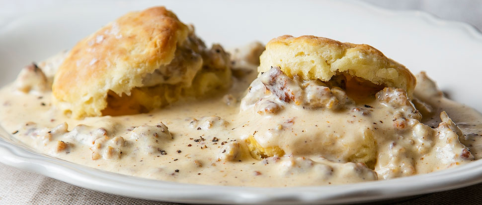

Easy Biscuits and Gravy
"Hot jumbo buttermilk biscuits with creamy sausage gravy are
ready in just 15 minutes for a hearty, family-favorite breakfast."
Ingredients
- 1 (16 oz) can refrigerated jumbo buttermilk biscuits
- 1 (9.6 oz) package of Jimmy Dean® Original Hearty Pork Sausage Crumbles
- 1/4 cup flour
- 21/2 cups milk
- Salt and Pepper (to taste)
Directions
- Prepare biscuits according to package description.
- While the biscuits are baking, cook sausage in large skillet
over medium heat for 5-6
minutes or until thoroughly heated and
browned, stirring frequently. Stir in flour. Gradually add milk.
- Cook until mixture comes to a boil and thickens, stirring constantly.
Reduce heat to medium-low;
simmer 2 minutes, stirring constantly.
- Season with salt and pepper to taste.
- Split biscuits in half. Place 2 halves on each of 8 plates; top with
about 1/3 cup gravy.
For the full recipe, go to
AllRecipes
